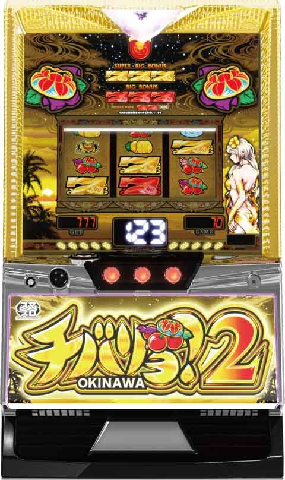
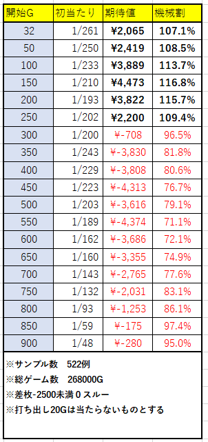
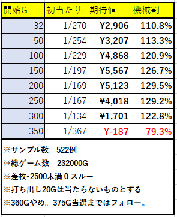
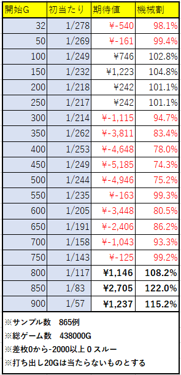
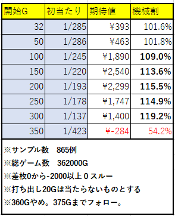

チバリヨ２強天国狙い~大量実践値(2000万G)データと実践サンプルから考察~

こちらの記事は、チバリヨ2の実践データを徹底的に考察した結果、特定の条件下で「強天国」と呼ばれる天国に突入し、平均TY（獲得枚数）が明らかに上昇する傾向があることを発見した内容です。合計2000万G以上の膨大な実践データを元に考察し検証を行いました。この強天国はどんな稼働の店舗でも拾える可能性が非常に高いです。
本記事では、強天国狙いの特定条件や、その際の天国性能向上の実践データを中心に解説しています。詳細な特定条件や、平均TY、予想される期待値、機械割といった数値は、有料記事にて詳しく公開中です。
チバリヨ2の基本仕様や前兆の仕組みなど、基礎知識は既にお持ちの上でご一読いただければ、より深い理解と実践に活かせる内容となっています。
ぜひ、この記事を読み進めていただき、強天国狙いの全貌と実践的な立ち回りを掴んでください。
～初心者向けチバリヨ記事～
～チバリヨ２解析ちょんぼりすた様～
無料で使えるチバリヨ2のチェリーカウント&実践データ収支webアプリ


① 特定条件（打ち出し条件）
差枚状況
差枚が -2500枚未満（-3000枚未満が望ましい）
一般的に知られているのはプラス差枚の台は有利切れ狙いこれも優秀。逆に大きく差枚が凹んでいる台ほど天国性能が上がる傾向がある
天国後の狙い目
天国突入後、0スルーの台が条件
② 打ち方
基本
天国抜け後、0スルーの台はまず10チェリーまで打つ
途中で単チェリーや非前兆の滑りチェリーが確認できた場合は、15チェリーまで確認する
10チェのハマり具合による切り替え
未当選時、300Gまでハマった場合は仮天井(360G)狙いへ切り替える
天国後、モードAを否定できれば高モード（通常B以上）が期待できるため、15チェリーまで確認
③ 大量データからの分析結果(約2500万G)
強天国当選時の平均TY
約1700枚 ※通常天国1500枚程度ボーナス初当たり確率
約1/260ボーナス当選時の天国移行率
約32%360Gやめ想定時の天国移行率
約34.8%
※約4000万G対象からサンプル522件
※ボーナス初当たり確率は一律32Gから打ち出し想定
※2連終了の台は自力か天国か判断つかないため除外
※サンプル数は今後も増加中。
④ 実践サンプル
実践結果（サンプル数：46例）
+13942枚（1台あたり約+303枚）天国当選時の平均TY
1933枚ボーナス初当たり確率
1/223.6ボーナス当選時の天国移行率
35.1%
※実践データはまだサンプルが少ないが、有望な結果が出ている。初当たりが軽くなるのは10チェ、15チェでキリ良くやめられてる事が影響してる可能性あり。
⑤ 予想される数値
天国当選時の平均TY
約1,800枚前後ボーナス初当たり確率
1/250～1/260程度ボーナス当選時の天国移行率
30～35％程度
⑥ 初当たり毎、天国平均TY、天国移行率別の期待値・機械割


まとめ
【強天国狙いのポイント】
差枚が大きく凹んでいる台かつ天国後の0スルーの台を狙え
差枚が -2500枚未満、特に -3000枚未満の台は天国突入時の性能が上昇する傾向がある。打ち方
天国後はまず10チェリーまで打ち、途中で単チェリーや滑りチェリーが確認できれば15チェリーまで確認する。300Gまでハマれば仮天井狙いに切り替え。大量実践値データと実践サンプルからの信頼性
実践サンプルで平均TYは1,933枚、1台あたり約+303枚のプラスが確認され、有利な結果が期待できる。予想数値
天国当選時の平均TYは約1,800枚前後、初当たり確率は1/250～1/260、天国移行率は30～35％程度と予測される。
詳細な数値、期待値シミュレーション、初当たり毎の機械割など、据え置き店舗で拾える頻度が高いこの強天国狙い、タイミングさえしっかり見極めれば大きな利益が狙える可能性がある。
※基本的な台仕様や前兆の仕組みについては、ちょんぼりすた様の記事を参照することを推奨する。
【天国0スルー差枚別期待値表】
天井期待値表&360ゾーン狙い期待値表（差枚-2500枚未満）
※実際はチェリー回数で押し引きするため参考値としてご利用ください


天井期待値表＆360ゾーン狙い期待値表（差枚0から-2000枚以上）
※比較のための期待値表となります。

